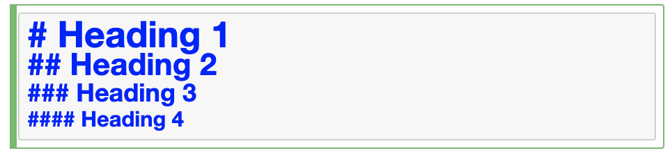
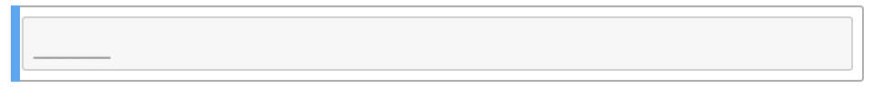

3. Markdown cells¶
Watch this video from 9:51 to 19:07
# To load the video, execute this cell by pressing shift + enter
from IPython.display import YouTubeVideo
from datetime import timedelta
start=int(timedelta(hours=0, minutes=9, seconds=51).total_seconds())
end=int(timedelta(hours=0, minutes=19, seconds=7).total_seconds())
YouTubeVideo("FrDYpLVuTkQ",start=start,end=end,width=640,height=360)
The following is a transcript of the video.
Let’s learn about the other type of cell which is markdown. We can convert between coding and markdown cells by pressing “y” or “m”. Markdown is a type of code but it’s a type of code that gives you back a very nicely formatted text when you execute a cell. So let’s say we wanted to create a beautiful type of heading we can use. When it’s a markdown cell, a hashtag # will be a heading whereas in a coding cell a hashtag is for comments and will be ignored by Python. So it matters if you have a markdown or a coding cell.
One hashtag will give you a very large heading, two hashtags will give you a smaller one, three hashtags will give you an even smaller heading. And then four hashtags will give you an even smaller heading. So you can choose the the heading style that you want.

Heading 1¶
Heading 2¶
Heading 3¶
Heading 4¶
You can use underscores, for example, to create a dividing line using markdown. I hope you can see, that that’s a very faint dividing line.

You can write a lot of text and you can use italics and bold using asterisks. One asterisk will make your text italic. So we put an asterisk and we put the asterisks before and after the text that we want to be italicized. And then when you hit shift + enter then the text will be italics. You can also use an underscore to create italics. Two asterisks or two underscores will be bold. You can put two spaces and enter and you’ll get a new line. And then you can put three asterisks or underscores, which will be italic and bold. You can execute those cells and that’s how you get italic, bold, and bold and italic.

I am writing some text and want to write in italics
(Remember, use two spaces after a line to create a newline)
this will be italics
this will be bold
this will be bold also
this will be italic bold
this will be italic bold too
You can also make lists. To make a list, it can be a numbered list, and you can just do “1”, “.”, space (“1. “) and just start creating the elements. And then you can do two dot space (“2. “), this will be the second, and three dot space (“3. “), the third. And you can use two spaces and a asterisk (” *”) to create an unmarked sub heading. So if we press shift + enter you can see we have a numbered list and we even have a subheading.

Let us create a list
this will be the first element
this will be the second element
and this will be the third element
this is an unmarked subheading
You can even create an unnumbered list just by using the asterisk straight. Asterisks space (“* “), first; asterisk space (“* “), second; and asterisk space (“* “), third element. So that’s how you get an unordered list.

an element of an unnumbered list
the second element of an unnumbered list
the final element of an unnumbered list
Importantly you can create links as well. To create a link you can say “for the link, click here” and you use the square brackets (“[ ]”) for the text to hyperlink. So click “[here]” and we can say https://google.com in parentheses (“( )”) and you can see it shows up as red. So if we shift + enter that and now we click there, we will be at google. So that’s how you create a link.

for the link, click here
So that’s just the basics: that’s how you use coding cells, that’s how you use markdown. Be sure to give your notebook a name. You can always save wherever you are and create a checkpoint by just clicking on the save icon. You can always download your notebook if you’ve completed an assignment. You want to download it and send it to your instructor now: you go to “File”, “Download as” and we’re always working with ipython notebooks and they have this very long extension: it’s ”.ipynb” for i python notebook. “i”, “p”, “y”, “n”, “b” and you just go to “File”, “Download as”, your notebook and it should go to your Downloads folder.

There’ll be several notebooks that you’ll have as assignments and that you’ll need to upload into Jupyter to go over them as a lesson and review them. You can just click the upload button here and you can select the file, an ipython notebook (.ipynb) that you want to upload.

I hope now that you can see some of the really positive things that come out of using a Jupyter notebook. When you have these lessons, you can double click on the cells themselves and you can see the all the code that goes behind it: you can see all the markdown that goes into the formatting of all of the text. You will have cells that you can put your answers into for these lessons and there will also be embedded youtube videos that will go over these lessons.
You’ll notice that these videos are actually made using Jupyter notebooks too. And these videos are meant for you to follow along and go at your own pace and if you ever need to go back and review something, pause. You can take all the time you need to review the material. That’s the point of having these youtube video tutorials in the notebook. So that is some of the basics of how to download Anaconda, how to load and get Jupyter started, the very basics of using Jupyter notebooks, of creating coding and markdown cells, and how to upload and save your Jupyter notebooks.
Thank you!